如何在 iPhone 和 Android 上订阅 Telegram Premium
Telegram Premium 终于开始向 iPhone 和 Android 用户推出。尽管该应用程序不断推出添加自定义通知声音等新功能，但 Telegram 推出了基于订阅的服务，供用户访问一些很棒的新功能。
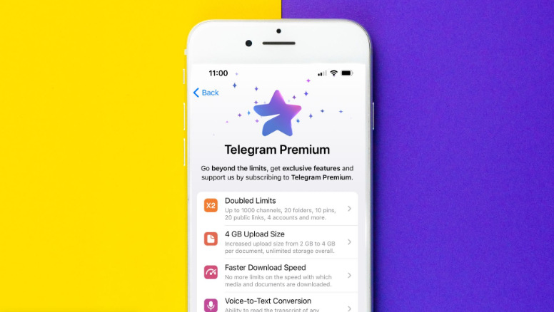
当然，高级版将解锁一些额外的功能，您需要每月付费 - 目前还没有年度计划。如果您想尝试这项新的订阅服务，本文将介绍如何在 iPhone 和 Android 上订阅 Telegram Premium。
什么是 TELEGRAM PREMIUM
Telegram Premium 是一项按月订阅的服务，可解锁新功能以获得更好的体验。通过每月支付 4.99 美元，您可以使用各种功能，例如每个文档的上传大小增加到 4GB、语音消息的语音到文本转换、无广告公共频道、新的 Telegram 应用程序图标等等。
Telegram Premium 用户将获得的最大升级是双倍限制。用户可以加入最多 1000 个群组和频道，在主聊天列表中固定最多 10 个聊天，最多保留 20 个公共链接等等。您可以参考下图了解所有新推出的双倍限额。
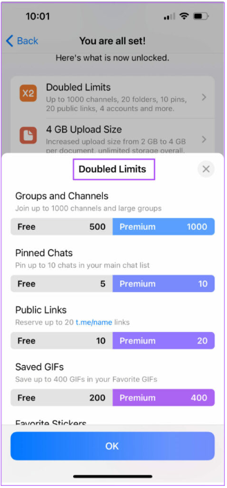
如何在 IPHONE 上订阅 TELEGRAM PREMIUM
要在 iPhone 上试用 Telegram Premium，您需要确保使用最新版本的 Telegram 应用。首先，请检查您是否至少使用 Telegram 应用程序 v8.8 或更高版本。打开 App Store 并检查更新。
按照以下步骤在 iPhone 上订阅 Telegram Premium。
第 1 步： 在 iPhone 上打开 Telegram 应用程序。
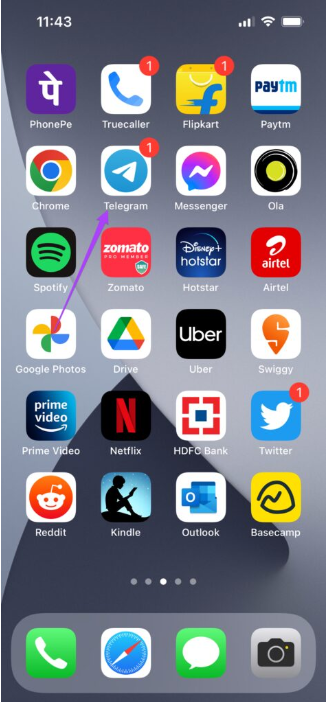
步骤 2： 点击右下角的“设置”图标。
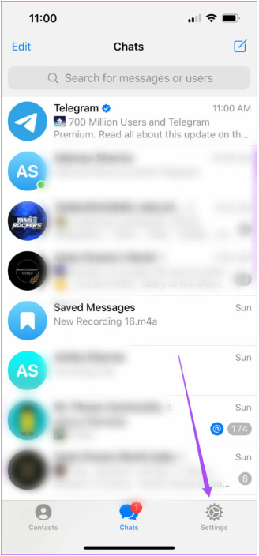
第 3 步： 向下滚动并从选项列表中点击 Telegram Premium。
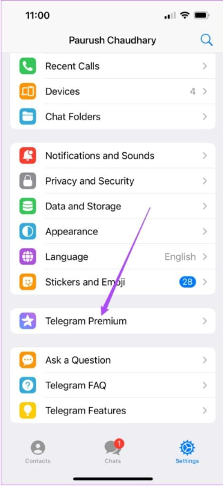
Telegram Premium 的所有功能都会显示在您的屏幕上。 （请注意，Telegram Premium 金额将以您所在地区的货币显示。）
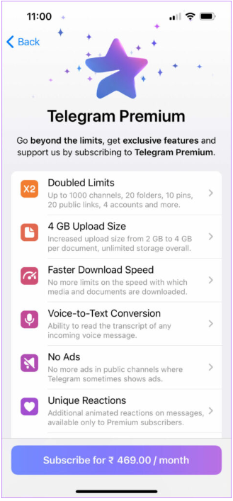
第四步： 点击底部的订阅按钮。
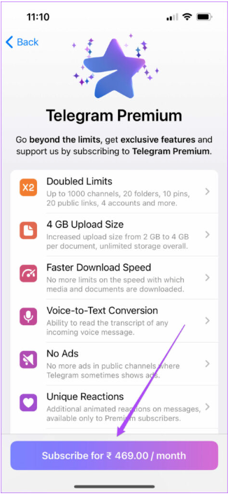
App Store 弹出窗口将出现在您的屏幕上。该应用程序会要求您每月从 Apple Wallet 中扣除 4.99 美元。
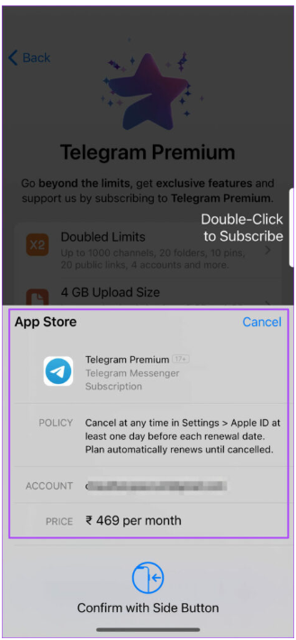
第 5 步： 双击侧边按钮以确认您的订阅。如果您使用的是 iPhone 8 或更低版本，请使用 Touch ID 确认您的订阅。
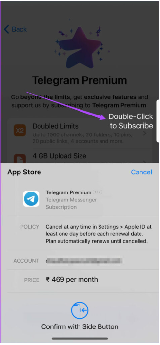
之后，您将收到订阅 Telegram Premium 的确认信息。您将在屏幕上看到相同的确认信息。
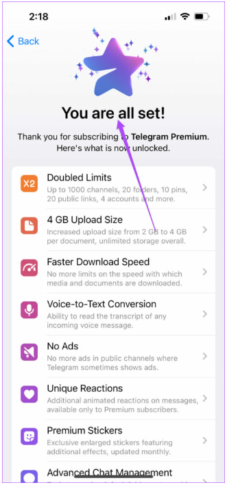
打开您的 Telegram 设置，您还会注意到您的个人资料名称旁边有一个蓝色星形徽标。这是分配给 Telegram Premium 用户的特殊个人资料徽章。
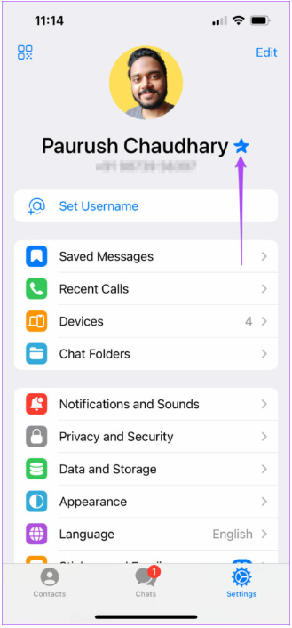
如何在 ANDROID 上订阅 TELEGRAM PREMIUM
对于 Android 上的 Telegram 用户来说，情况通常保持不变。就像 iPhone 用户一样，Android 用户也应该下载最新版本的 Telegram 应用程序 v8.8。
从 Play 商店更新应用程序后，请按照以下步骤操作。
第 1 步： 在 Android 手机上打开 Telegram。
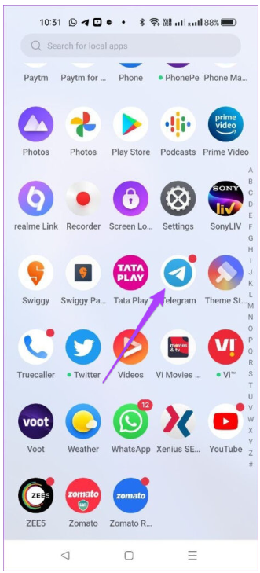
第 2 步： 点击左上角的汉堡菜单图标。
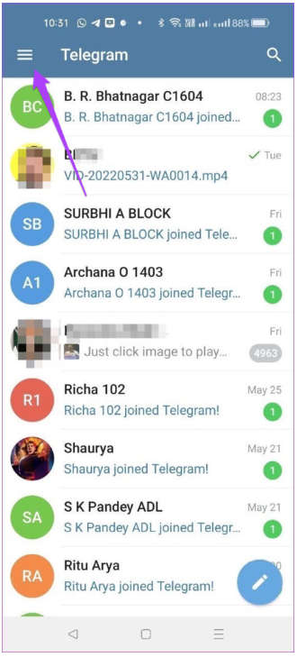
步骤 3： 点击选项列表中的“设置”。
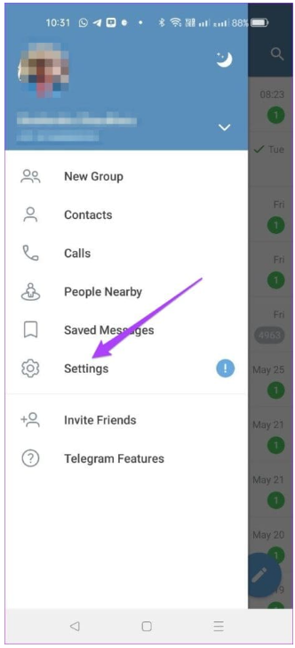
第 4 步： 在“设置”菜单中，向下滚动并点击 Telegram Premium。
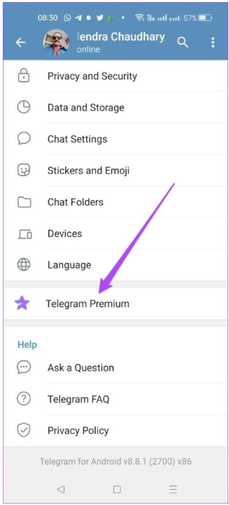
Telegram Premium 的所有功能都会显示在您的屏幕上。
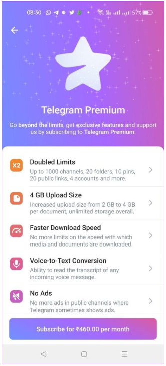
第五步： 点击底部的订阅。
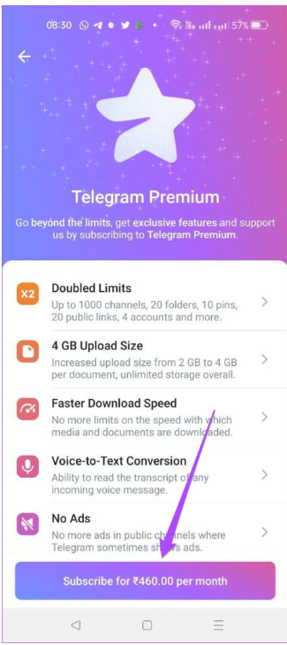
您将看到一个 Google Play 弹出窗口，其中显示您的首选付款方式。
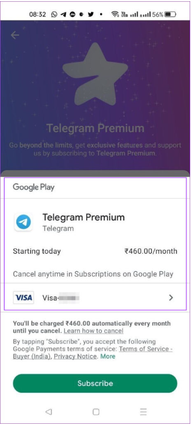
要更改付款方式，请点击帐单详细信息旁边的箭头。
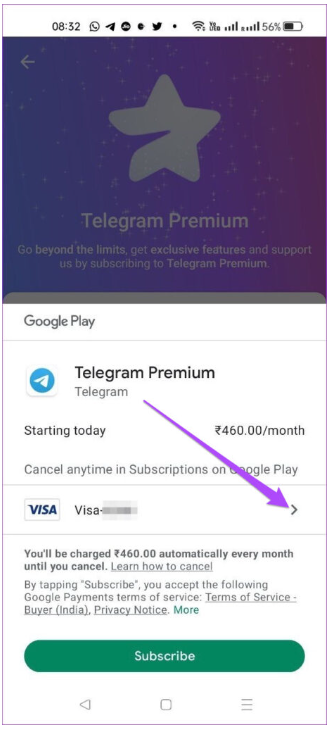
您可以选择从以前保存的卡片中进行选择，也可以添加新卡片。
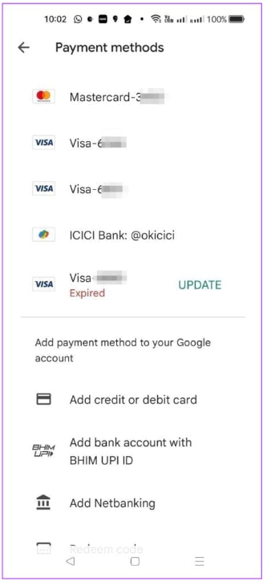
第六步： 选择支付方式后，点击订阅。
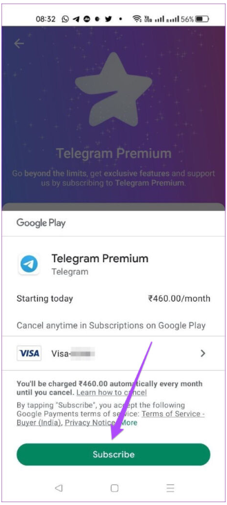
您已成功订阅 Telegram Premium。您将在屏幕上看到相同的确认信息。
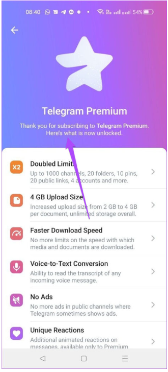
当您返回“设置”菜单时，您会注意到您的个人资料名称旁边有一个蓝色星形徽标。这是分配给 Telegram Premium 用户的特殊个人资料徽章。
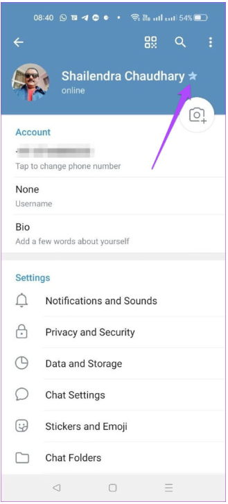